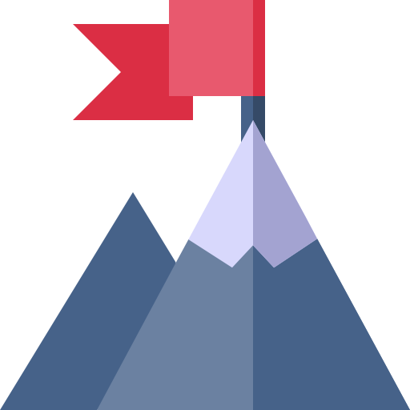

Misión
Crear conciencia medioambiental a través de charlas con expertos, dando a conocer las buenas prácticas de las empresas con experiencia en el tema, compartiendo tips para una vida ecofriendly y facilitando la toma en contacto con la naturaleza a través del voluntariado.

Visión
Proveer a la sociedad salvadoreña y a la región de líderes conscientes que apliquen sus conocimientos sobre el medioambiente en todo lo que hacen con el fin de lograr un desarrollo sostenible y responsable.